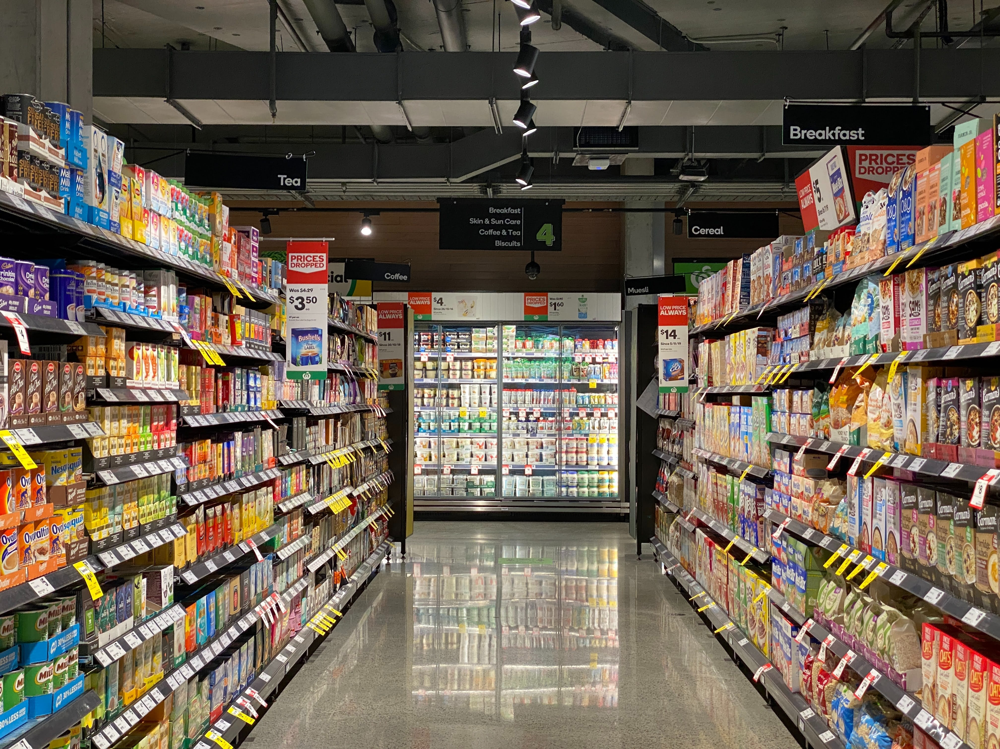

Retail Transaction
About
This excel project is about retail transaction dataset from Kaggle. The dataset contains information about transactions, dates, customer names, products, total items, total costs, payment methods, city, store types, discounts applied, customer categories, seasons, and promotions. The project’s objective is to do exploratory data, extract insight, and know the correlation between each information.
Techniques
- Understanding Data and Brainstorming
- Data Cleaning and Transformation
- Creating New Tables Using Power Query Editor
- Pivot Tables
- Data Visualization Multiple charts were used to visualize pivot tables
- Combo chart (bar and line): to see trends of number transaction and total cost over time.
- Bar chart: used to represent top 10 most buy product and total transaction by city and store type.
- Pie chart: used to see the percentage transaction based on promotion given.
- Slicer: include year, season, payment method, store type, customer category used to filter data based on specific factors and compare between factors for multiple-axis visualization.
- Interactive Dashboard
Understanding what each column stands for and what can be gained from this dataset. Take note of what will be done and what analysis will be carried out.
Dataset cleaning included handling duplicates, checking for missing values, changing data type (Date), splitting column Date to extract day, month, and year, and replacing values TRUE and FALSE into Yes and No in the Discount_Applied column.
The product column has a value list of products. Then the data were split for each product into rows. The technique used was Power Query Editor. The product column was split into rows and data was cleaned to remove unnecessary spaces and strips. The new tables were created with the name Products. While the cleaned data table was named Cost.
Pivot tables were used to summarize and aggregate data. In this dataset pivot tables were used to analyze trends of the number transaction and total cost, top 10 most buy product, total transaction based on city and store type, and number of transactions by promotion. Create slicers that correlate all the pivot tables. Because there are 2 tables, it was necessary to checklist add this data to the data model when creating the pivot tables.
All the visualization was combined into 1 interactive dashboard and edited for the color to get better visualization. The dashboard is dynamic where it can be clicked to filter using slicer and the dashboard will show data based on the slicer we choose.
Summarized Insights
- Discover trends of number transaction and total cost over time. With slicer, the dashboard showed the trends based on year, season, payment method, store type, and customer category. The trends fluctuated over the year, in 2021 was the lowest number of transaction and total cost.
- Revealing the top 10 most buy products. Bar chart can compare products over the season.
- Using slicer also can change the top 10 products based on the filter we use. Multi-select slicer allowing to get multiple filters in one visualization.
- Identifying total transaction by city and store type with multi-axis bar chart. Bar chart showed comparison total transaction for all store types based on city. Then revealing store performance for each city.
- Understanding the effect of using promotion for the number of transactions. With slicer,a the dashboard revealed the effect of promotion based on the slicer/filter.